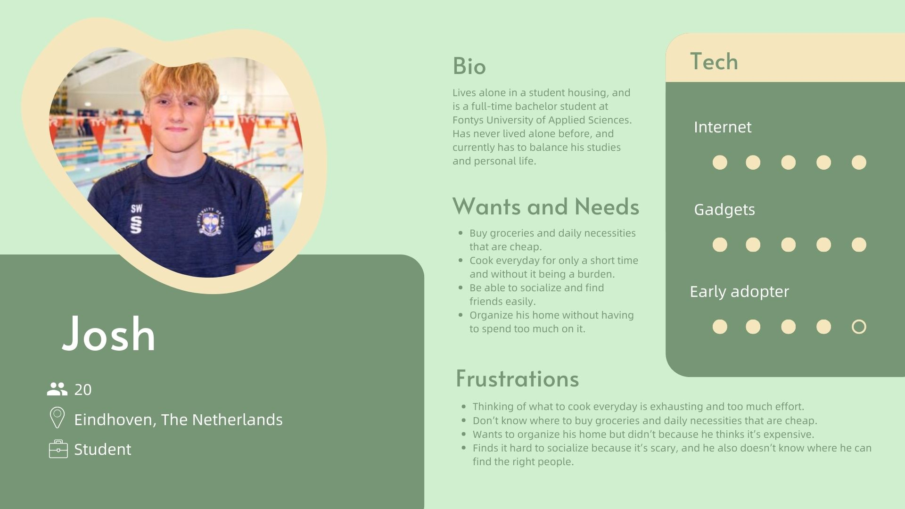

User Research
For the group project, we all begin from doing a user research to understand more about the target users. The user research of my group covers the conduction of a survey, and several interviews. Shown below are the survey form, survey result, and the transcript of the interviews that I did.
Then after we finished our research, we made 2 personas, this is one of the personas that I made :
Me and my teammates also did card sorting before starting with designing the layout of the website, to determine the categorization of contents in our website.
Reflection
Through this work I learned to do target group-based research to find out more about the target users. As a result, my group can make a product that is more user-centered, and provides functionalities in the prodcut based on the users' needs.